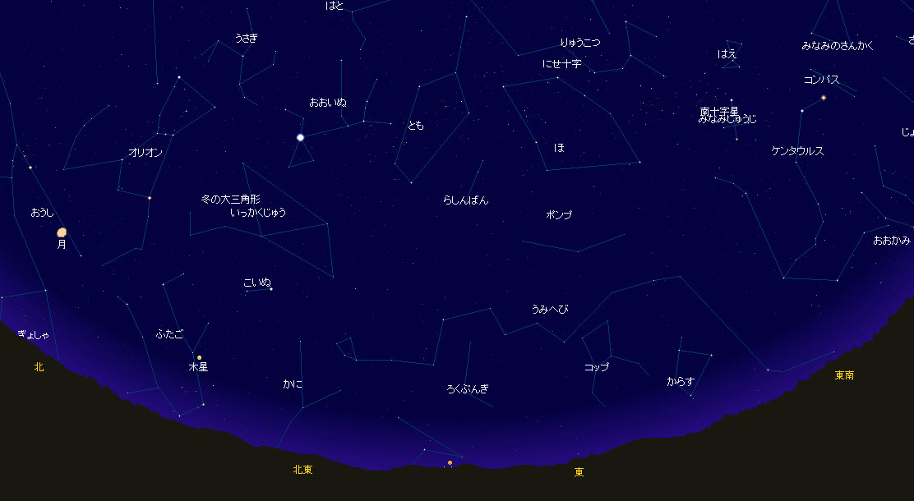

| 南十字星とオリオンが見える星空 観測地：南米チリのプンタアレナス （南緯53.1度、西経整形70.9度） 現地時刻：10月23日 04時18分 月、木星、おおいぬ座のシリウス、にせ十字なども見える |
|  |
| この星座表は、Stella Theater Pro で制作しました。 Stella Theater Pro は、下記からダウンロードできます。 http://toxsoft.com/sswpro/ ダウンロード後３ヶ月間は無料で試用できます その後、3,200円でライセンスを購入することもできます。 対応機種：Windows 8, 7, Vista, XP, 2000, Me |